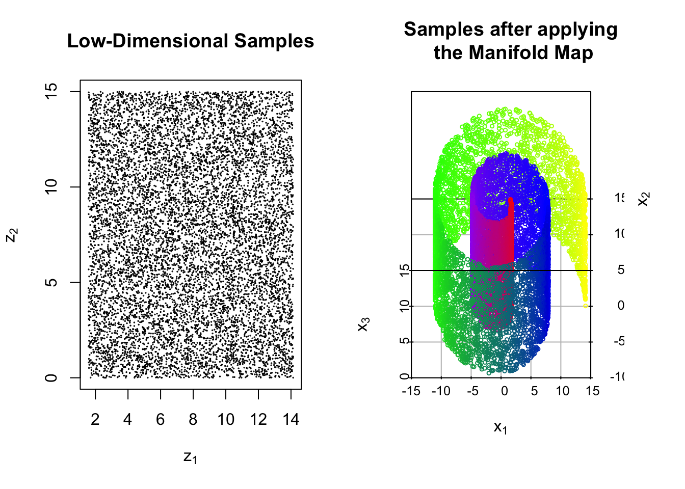

7.5 Spectral Clustering
7.5.1 Introduction
Spectral Clustering represents a significant leap in the evolution of clustering techniques. Distinguished from traditional methods like K-means, it excels in detecting complex structures and patterns within data. It’s based on ideas from graph theory and simple math concepts, mainly focusing on how to use information from graphs. Imagine each piece of data as a point on a graph, with lines connecting the points that are similar. Spectral Clustering uses these connections to figure out how the data should be grouped, which is especially handy when the groups are twisty or oddly shaped.
The key step in Spectral Clustering is breaking down a special graph matrix (called the Laplacian matrix) to find its eigen values and eigen vectors. These eigen vectors help us see the data in a new way that makes the groups more obvious. This makes it easier to use simple grouping methods like K-means to sort the data into clusters. This approach is great for finding hidden patterns in the data.
However, Spectral Clustering comes with its own challenges. Choosing the right number of groups can be tricky, and it might not work as well with very large sets of data because of the relatively large computing cost. Nevertheless, its robustness and adaptability have cemented its role across various domains, from image processing to bioinformatics.
7.5.2 Algorithm
- Similarity Graph Construction:
Start by constructing a similarity graph \(G\) from your data (similar to the steps in Laplacian Eigenmap section. Each data point is represented as a node in the graph.)
Define the edges of the graph. There are three common ways to do this:
\(\epsilon\)-neighborhood graph: Connect all points whose pairwise distances are smaller than \(\epsilon\).
K-nearest neighbors: For each point, connect it to its k nearest neighbors.
Fully connected graph: Connect all points with each other. Typically, the Gaussian similarity function (also known as the Radial Basis Function or RBF) is used to calculate the weights of the edges: \(w_{ij} = \exp(-\frac{||\vec{x}_i - \vec{x}_j||^2}{2\sigma^2})\), where \(\vec{x}_i\) and \(\vec{x}_j\) are two points in the dataset and \(\sigma\) is a tuning parameter.
Note:It is worth noting that there exists a slight difference in the construction of similarity graph matrix compared to Laplacian Eigenmap we mentioned in manifold learning chapter. For the fully connected graph, after using Radial basis to depict all the pair-wise distances, we don’t need to set a threshold and sparsify the matrix (set some entries to zero) like we did in Laplacian Eigenmap, we just keep all the original radial basis distances.
- Graph Laplacian Matrix:
Similar to corresponding parts in Laplacian Eigenmap. Calculate the adjacency matrix \(W\), where \(W_{ij}\) represents the weight of the edge between nodes \(i\) and \(j\).
Calculate the degree matrix \(D\), which is a diagonal matrix where each diagonal element \(D_{ii}\) is the sum of the weights of the edges connected to node \(i\).
Compute the unnormalized Graph Laplacian matrix \(L\) as \(L = D - W\).
- Eigen Decomposition:
Perform the eigen decomposition on the Laplacian matrix \(L\) to find its eigen values and eigen vectors.
Select \(k\) smallest eigenvalues and their corresponding eigen vectors. \(k\) is the number of clusters you want to identify.
Mathematical Proof behind this step
As we have stated in Laplacian Eigenmap section, the Graph Laplacian matrix \(L\) is positive semi-definite.
Given any vector \(\vec{y} \in \mathbb{R}^N\)
\[ \vec{y}^T \mathbf{L} \vec{y}=\sum_{i=1}^N \sum_{j=1}^N \mathbf{W}_{i j}\left(y_i-y_j\right)^2 \]
Obviously, it is non-negative. Besides, we can always find a vector \(\vec{y} = \mathbf{1}_N\) that makes it zero, which means the smallest eigen value must be zero, with the corresponding eigen vector being \(\mathbf{1}\).
From the above equation, we can also justify our eigen-decomposition approach in finding the number of clusters. For either \(\epsilon\)-neighborhood graph or K-nearest neighbors approach, if point \(i\) and \(j\) are not connected, then \(\mathbf{W}_{ij}=0\), however, if they are connected, \(\mathbf{W}_{ij} = 1 > 0\). With some careful observation, we find that as long as we set \(y_i=y_j\) for \(\forall \mathbf{W}_{ij} > 0\), then we are able to get zero in the above equation. Since in cluster \(\Omega_1 = \{\vec{x}_p, \dots , \vec{x}_q \}\), all the points are connected, and \(\mathbf{W}_{ij} > 0 \; \forall \{\vec{x}_i, \vec{x}_j\} \in \Omega_1\), we can simply set \(y_i=1\) for \(\; \forall i \in \Omega_1\), and \(y_j=0\) for \(\; \forall j \notin \Omega_1\). So the eigen-vector that corresponds to cluster \(\Omega_1\) is \(\vec{y}_1 = \sum \vec{e}_i \in \mathbb{R}^N, \; \forall \, i \; s.t. \vec{x}_i \in \Omega_1\), where \(\vec{e}_i\) is a vector with all zero except the \(i^{th}\) entry being one.
So when we perform eigen decomposition on Graph Laplacian matrix \(\mathbf{L}\): \(\mathbf{L} = \mathbf{Q} \mathbf{\Lambda} \mathbf{Q}^T\). Then for \(\vec{y}\) s.t. \(\vec{y}^T \mathbf{L} \vec{y}=0\), we can rewrite it as
\[ \vec{y}^T \mathbf{L} \vec{y} = \vec{y}^T \mathbf{Q} \mathbf{\Lambda} \mathbf{Q}^T \vec{y} = (\mathbf{\Lambda}^{1/2} \mathbf{Q}^T \vec{y})^T (\mathbf{\Lambda}^{1/2} \mathbf{Q}^T \vec{y})=0 \] As a result, we know \(\mathbf{\Lambda}^{1/2} \mathbf{Q} \vec{y} = \vec{0}\), in other words
\[ \mathbf{L} \vec{y} = \mathbf{Q} \mathbf{\Lambda} \mathbf{Q}^T \vec{y} = (\mathbf{Q} \mathbf{\Lambda}^{1/2})(\mathbf{\Lambda}^{1/2} \mathbf{Q}^T \vec{y}) = \vec{0} \] So we know that \(\vec{y}\) is just an eigen-vector of \(\mathbf{L}\), with the corresponding eigen-value being zero.
In reality, especially when we use Fully-connected graph, we can’t get \(k\) exact zero-eigenvalues with corresponding \(k\) eigenvectors. (Different clusters are not necessarily completely separate, and Fully-connected graph even allows every \(\mathbf{W}_{ij} > 0\)). So we will just conduct eigen decomposition and choose \(k\) smallest eigenvalues together with their corresponding eigen-vectors.
A toy example
First, we’ll create the simulation data with two distinct clusters.
# Generate two clusters
cluster1 <- matrix(c(1, 2, 1.5, 2.5, 2, 3), ncol = 2)
cluster2 <- matrix(c(4, 5, 4.5, 5.5, 5, 6), ncol = 2)
data <- rbind(cluster1, cluster2)Visualize the data points to make it more intuitive.
plot(data, col = c(rep("red", nrow(cluster1)), rep("blue", nrow(cluster2))), pch = 19, xlab = "X-axis", ylab = "Y-axis")
text(data, labels = 1:nrow(data), pos = 4, col = "black") # Adding labels
title("Data Points Visualization")
We use the \(\epsilon\)-neighborhood approach to construct the similarity graph.
epsilon <- 1.5 # Set epsilon value
n <- nrow(data)
similarity_matrix <- matrix(0, n, n)
for (i in 1:n) {
for (j in 1:n) {
if (i != j && dist(rbind(data[i, ], data[j, ])) < epsilon) {
similarity_matrix[i, j] <- 1
similarity_matrix[j, i] <- 1
}
}
}
print(similarity_matrix)## [,1] [,2] [,3] [,4] [,5] [,6]
## [1,] 0 1 1 0 0 0
## [2,] 1 0 1 0 0 0
## [3,] 1 1 0 0 0 0
## [4,] 0 0 0 0 1 1
## [5,] 0 0 0 1 0 1
## [6,] 0 0 0 1 1 0Compute the Laplacian matrix.
degree_matrix <- diag(apply(similarity_matrix, 1, sum))
laplacian_matrix <- degree_matrix - similarity_matrix
print(laplacian_matrix)## [,1] [,2] [,3] [,4] [,5] [,6]
## [1,] 2 -1 -1 0 0 0
## [2,] -1 2 -1 0 0 0
## [3,] -1 -1 2 0 0 0
## [4,] 0 0 0 2 -1 -1
## [5,] 0 0 0 -1 2 -1
## [6,] 0 0 0 -1 -1 2Perform eigen decomposition on the Laplacian matrix. We choose the smallest two eigenvalues here since we want to
eigen_result <- eigen(laplacian_matrix)
# Sort eigenvalues and their corresponding eigenvectors
sorted_indices <- order(eigen_result$values)
sorted_eigenvalues <- eigen_result$values[sorted_indices]
sorted_eigenvectors <- eigen_result$vectors[, sorted_indices]
# Select the smallest two eigenvalues and their corresponding eigenvectors
smallest_eigenvalues <- sorted_eigenvalues[1:2]
smallest_eigenvectors <- sorted_eigenvectors[, 1:2]
print(smallest_eigenvalues)## [1] 1.776357e-15 1.776357e-15## [,1] [,2]
## [1,] 0.0000000 -0.5773503
## [2,] 0.0000000 -0.5773503
## [3,] 0.0000000 -0.5773503
## [4,] -0.5773503 0.0000000
## [5,] -0.5773503 0.0000000
## [6,] -0.5773503 0.0000000We find that the smallest two eigen-values are 0 (not exact zero here because of computational precision issue), and their corresponding eigen-vectors give us information about the clustering. The first cluster contains data point 4, 5, 6; while the second cluster contains the rest three data points 1, 2, 3.
We try fully-connected graph with radial basis function to construct the adjacency matrix this time.
gamma <- 1 # Scale parameter for the RBF kernel
n <- nrow(data)
similarity_matrix <- matrix(0, n, n)
for (i in 1:n) {
for (j in 1:n) {
if (i != j) {
distance <- dist(rbind(data[i, ], data[j, ]))^2
similarity_matrix[i, j] <- exp(-gamma * distance)
}
}
}
print(similarity_matrix)## [,1] [,2] [,3] [,4] [,5] [,6]
## [1,] 0.000000e+00 2.865048e-01 6.065307e-01 1.522998e-08 2.172440e-10 2.289735e-11
## [2,] 2.865048e-01 0.000000e+00 2.865048e-01 8.764248e-08 1.522998e-08 2.172440e-10
## [3,] 6.065307e-01 2.865048e-01 0.000000e+00 3.726653e-06 8.764248e-08 1.522998e-08
## [4,] 1.522998e-08 8.764248e-08 3.726653e-06 0.000000e+00 2.865048e-01 6.065307e-01
## [5,] 2.172440e-10 1.522998e-08 8.764248e-08 2.865048e-01 0.000000e+00 2.865048e-01
## [6,] 2.289735e-11 2.172440e-10 1.522998e-08 6.065307e-01 2.865048e-01 0.000000e+00degree_matrix <- diag(apply(similarity_matrix, 1, sum))
laplacian_matrix <- degree_matrix - similarity_matrix
print(laplacian_matrix)## [,1] [,2] [,3] [,4] [,5] [,6]
## [1,] 8.930355e-01 -2.865048e-01 -6.065307e-01 -1.522998e-08 -2.172440e-10 -2.289735e-11
## [2,] -2.865048e-01 5.730097e-01 -2.865048e-01 -8.764248e-08 -1.522998e-08 -2.172440e-10
## [3,] -6.065307e-01 -2.865048e-01 8.930393e-01 -3.726653e-06 -8.764248e-08 -1.522998e-08
## [4,] -1.522998e-08 -8.764248e-08 -3.726653e-06 8.930393e-01 -2.865048e-01 -6.065307e-01
## [5,] -2.172440e-10 -1.522998e-08 -8.764248e-08 -2.865048e-01 5.730097e-01 -2.865048e-01
## [6,] -2.289735e-11 -2.172440e-10 -1.522998e-08 -6.065307e-01 -2.865048e-01 8.930355e-01eigen_result <- eigen(laplacian_matrix)
# Sort eigenvalues and their corresponding eigenvectors
sorted_indices <- order(eigen_result$values)
sorted_eigenvalues <- eigen_result$values[sorted_indices]
sorted_eigenvectors <- eigen_result$vectors[, sorted_indices]
# Select the smallest two eigenvalues and their corresponding eigenvectors
smallest_eigenvalues <- sorted_eigenvalues[1:2]
smallest_eigenvectors <- sorted_eigenvectors[, 1:2]
print(smallest_eigenvalues)## [1] 2.564067e-16 2.632047e-06## [,1] [,2]
## [1,] -0.4082483 0.4082488
## [2,] -0.4082483 0.4082494
## [3,] -0.4082483 0.4082467
## [4,] -0.4082483 -0.4082467
## [5,] -0.4082483 -0.4082494
## [6,] -0.4082483 -0.4082488As we can see, this time the two smallest eigenvalues are not both zero, with one being a little bit more than zero. This has something to do with the properties of the new adjacency matrix \(\mathbf{A}\). In addition, we observe that the the two eigen-vectors are not something we expected. It seems weird at the first glance, but since \(\mathbf{L} \vec{y} = \vec{0}\), \(\vec{y} = \vec{y}_2 \pm \vec{y}_1\) is also an eigen-vector with the eigen-value being zero, we are still able to recover the two clusters. This suggests us that we may do some computation ourselves after getting the eigen-vectors to recover the clustering situation.
In this situation, it may seem that fully-connected graph is not as straight-forward as the other two adjacency matrix construction methods, and the result is also not as optimal. But we should realize that in real-data situation, different clusters are not totally separate, as a result, a soft-threshold can be a better choice in most situations.